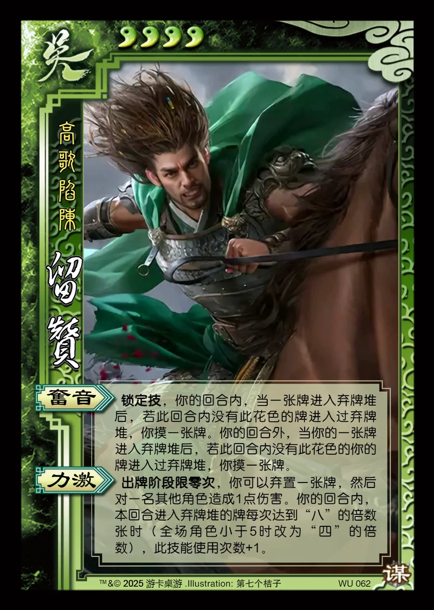

点击卡面查看大图
吴
谋留赞
♥4高歌陷陈
奋音锁定技
锁定技，你的回合内，当一张牌进入弃牌堆后，若此回合内没有此花色的牌进入过弃牌堆，你摸一张牌。你的回合外，当你的一张牌进入弃牌堆后，若此回合内没有此花色的你的牌进入过弃牌堆，你摸一张牌。
力激
出牌阶段限零次，你可以弃置一张牌，然后对一名其他角色造成1点伤害。你的回合内，本回合进入弃牌堆的牌每次达到“八”的倍数张时（全场角色小于5时改为“四”的倍数），此技能使用次数+1。